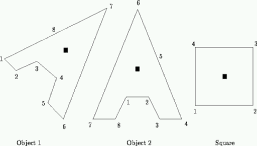

| Bumpy Objects |

Consider objects such as these. They are polygons, specified by the coordinates of a centre of mass and their vertices. In the figure, centres of mass are shown as black squares. The vertices will be numbered consecutively anti-clockwise as shown.
An object can be rotated to stand stably if two vertices can be found that can be joined by a straight line that does not intersect the object, and, when this line is horizontal, the centre of mass lies above the line and strictly between its endpoints. There are typically many stable positions and each is defined by one of these lines known as its base line. A base line, and its associated stable position, is identified by the highest numbered vertex touched by that line.
Write a program that will determine the stable position that has the lowest numbered base line. Thus for the above objects, the desired base lines would be 6 for object 1, 6 for object 2 and 2 for the square. You may assume that the objects are possible, that is they will be represented as non self-intersecting polygons, although they may well be concave.
Successive lines of a data set will contain: a string of less than 20 characters identifying the object; the coordinates of the centre of mass; and the coordinates of successive points terminated by two zeroes (0 0), on one or more lines as necessary. There may be successive data sets (objects). The end of data will be defined by the string '#'.
Output will consist of the identification string followed by the number of the relevant base line.
Object2 4 3 3 2 5 2 6 1 7 1 6 3 4 7 1 1 2 1 0 0 Square 2 2 1 1 3 1 3 3 1 3 0 0 #
Object2 6 Square 2